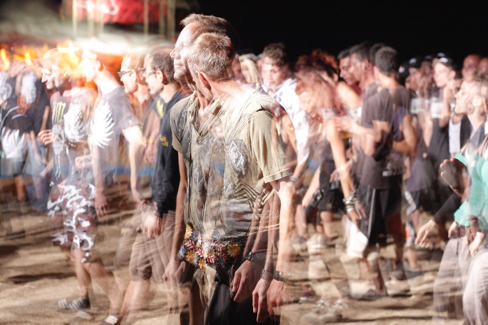

Justin Timberlake, JC Chasez, Chris Kirkpatrick, Joey Fatone, and Lance Bass. Their self-titled debut album was successfully released to European countries in 1997, and later debuted in the US market with the single "I Want You Back". 
After heavily publicized legal battles with their former manager Lou Pearlman and former record label Bertelsmann Music Group, the group's second album, No Strings Attached (2000), sold over one million copies in one day and 2.4 million copies in one week, which was a record for over fifteen years.